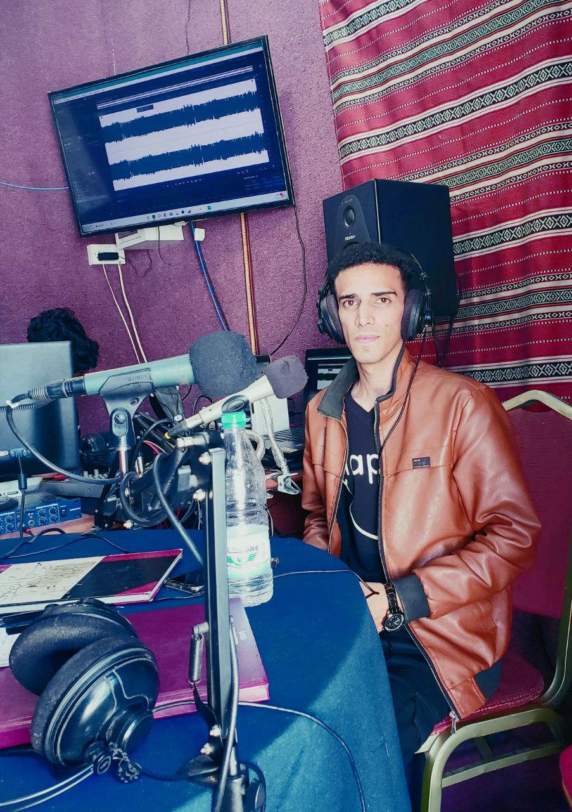

يحي الحيمي...البدء من القمة
طالب مثابر وناشط بارز في العمل الحقوقي والتطوعي
عندما نتحدث عن الإبداع في العمل التطوعي بين الطلاب اليمنيين، تتجه الأنظار صوب الطالب العشريني (يحي الحيمي)، شاب يتمتع بميزة فريدة في التواصل، ومن يستمع له يصغي لحضوره العالي وكاريزماه الطاغية، موهبة صقلها يحيى بالتدريب المستمر وممارسة الأنشطة التطوعية لدى عدد من المؤسسات والمنظمات الحقوقية المحلية والعالمية.
وحين يعتقد البعض أن العمل التطوعي هو أرقى الأعمال التي يمارسها الإنسان في سنوات متقدمة من عمره، خالف الشاب الحيمي هذه القاعدة، فبدأ عمله التطوعي حين كان طالبا في المدرسة، واستمر في عمله بشغف وإبداع، ليحصد تكريما مبكرا على المستوى المحلي والدولي.
ولد الشاب (الحيمي) عام 1997 في الحيمة الداخلية التابعة لمحافظة صنعاء، وتلقى تعليمه الابتدائي في مدرسة عمار بن ياسر بمديرية نقم في العاصمة صنعاء، وكان يدرس العلوم الدينية في الجامع الكبير بصنعاء القديمة، وحينما بلغ الحيمي الحادية عشر من عمره، واجه قدراً قاسياً، فبينما كان ينتطر بزوغ شمس صباحات أحد الأيام، ليتم تكريمه في الجامع الكبير، توفي والده.
واصل الحيمي تعليمه بدعم من أسرته الذين لمحوا فيه الفطنة والذكاء، كونه من أوائل الصف في مدرسته، كما نال تكريما في معهد أمديست عند دراسته اللغة الإنجليزية فيه عام 2012
انخرط الحيمي في العمل الحقوقي التطوعي بفضل زملائه في المدرسة، الذين لم يمنعهم صغر سنهم من ممارسة النشاط الحقوقي، على مستوى مدارس مديرية آزال، لفت انتباه الحيمي نشاط "الناشطين الحقوقيين" وعلاقاتهم الواسعة بالجهات الرسمية، فطلب أن يشاركهم في العمل، وعندما دخل الحيمي معهم في دورة تدريبية تهتم ببناء قدرات الشباب والأطفال على مهارات التواصل وحل المشكلات، تفاجأ الحيمي أن مؤسسة "أجيال للطفولة والتنمية" التي تقوم بالدورة لم تختر سواه لعمل تطوعي لديها.
يقول الحيمي لـ"أطياف" "عملت لدى المؤسسة مستمتعا بعملي، رغم علمي أنني أعمل بدون أي مقابل، وذلك لأنني لم أوقع معهم عقد عمل، ولم نتفق على مقابل، وبعد شهر من العمل استدعاني مدير المؤسسة، وتفاجأت عندما أعطاني 30 ألف ريال كراتب شهري".
لم يكتف الحيمي بالعمل لدى مؤسسة أجيال للطفولة والتنمية، بل وجد فيها فرصة لتطوير قدراته وشحذ مهاراته، وبنى علاقات مع العديد من المبادرات والمؤسسات الإنسانية المحلية المهتمة بالطفولة، ليصبح الحيمي أحد مؤسسي الإتحاد العام لأطفال اليمن، وأصبح لاحقا مسؤولا ماليا في الاتحاد، فمديرا تنفيذيا، ثم أصبح القائم بعمل رئيس الاتحاد.
دخلت اليمن في العام 2015 بحرب دامية، تعرضت فيها عدد من المحافظات اليمنية وعلى رأسها صنعاء لغارات مدمرة من قبل التحالف العربي، الأمر الذي كان له بالغ الأثر على صحة الأطفال النفسية والجسدية، حتى أن العديد منهم أصيبوا بالسكر نتيجة الفزع من القصف، عندها لم يكن الحيمي بعيدا عن الأطفال محور اهتمامه، ليقوم وهو في السابعة عشر من عمره بتقديم الدعم النفسي لهم مع منظمة اليونسف.
واستمر الحيمي -وباهتمام خاص بالطفولة¬- في ممارسة نشاطه الحقوقي والتطوعي، نشاط تُوج بعدد من التكريمات من قبل منظمات محلية وأممية، منها تكريم ولقب " أفضل متحدث وممثل لليمن في اليوم العالمي للشباب" من قبل منظمة اليونيسف، وتكريم من قبل الأمم المتحدة في اليوم العالمي للمتطوعين، كما عُين مستشارا لحكومة الأطفال الوطنية، إلى جانب عمله في منظمة التنمية المستدامة كمنشط مساحات صديقة، وظهر الحيمي على العديد من القنوات التلفزيونية والإذاعات المحلية والدولية، أبرزها إذاعة النور اللبنانية.
كان الحيمي يمارس نشاطه التطوعي والحقوقي ويدرس الثانوية في الوقت نفسه، دون أن يتأثر مستواه الدراسي، وعند تخرجه من الثانوية التحق بجامعة صنعاء وكعادة الشاب النشيط، قام الحيمي بالتسجيل في كلية التجارة، وكلية البترول والموارد الطبيعية، وكلية الإعلام، ونجح في اختبار القبول في الكليات الثلاث، إلا أن قراره استقر على الدراسة في كلية الإعلام، يقول الحيمي "دخلت كلية الإعلام لرغبتي الكبيرة في أن أصبح إعلاميا"
وفي عامه الجامعي الأول عمل الحيمي متطوعا في فريق العلاقات العامة في عدد من الأعمال التطوعية الخيرية كمشروع "بنك الكساء"، بالإضافة إلى عمله التطوعي في فريق اللوجستيك في تدكس بصنعاء
وفي العام الثاني لدراسته بكلية الإعلام، عُين نائبا لرئيس دائرة الصحافة الورقية والإلكترونية في الأمانة العامة للإعلام والاتصال في القوى الديمقراطية للسلام والوئام، التي يقع مقرها الرئيسي في جمهورية مصر العربية.
يشارف الحيمي اليوم على نهاية مشواره الدراسي، للحصول على شهادة البكالوريوس من قسم الإذاعة والتلفزيون، وفي كل سنة طواها في القسم نال تكريما كأحد الثلاثة الطلاب الأوائل بالقسم.
في الوقت الذي يفتقر فيه اليمن بشكل خاص والوطن العربي بشكل عام للعمل التطوعي مقارنة بدول العالم الأول، يظهر يحيى الحيمي مثالا بارزا على قدرة الشاب اليمني على ممارسة العمل التطوعي والنجاح فيه، دون أن تتأثر التزاماته الدراسية أو الأسرية.
يذكر زملاء الحيمي في كلية الإعلام قصة طريفة حدثت في بداية دراسته، و ذلك عندما طلب أحد الدكاترة من الطلاب التعريف بأنفسهم، في إطار الإجابة عن بعض الأسئلة التي كان أحدها يتطرق إلى عمل الطالب الحالي أو السابق، وكانت معظم إجابات الطلاب هي "لا أعمل" وقلة من الإجابات كانت "أعمل في كذا"، وكانت دهشة الحاضرين كبيرة عندما صعد الحيمي واستعرض سيرته وأعماله، أعقبها قول الدكتور مازحا " هذا يفسر لماذا لم يجد زملاؤك عملا، لقد أخذت كل الأعمال يا يحيى"

شهادة تقديرية للحيمي من قبل الأمم المتحدة في "اليوم العالمي للتطوع"

شهادة شكر وتقدير للحيمي من قبل الإتحاد العام لأطفال اليمن

شهادة تقديرية للحيمي من مؤسسة كالبنيان

شهادة تقديرية للحيمي من مؤسسة حماية الأطفال - اليونيسف